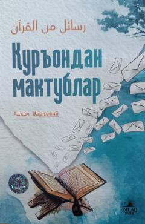

QMQur'on oyatlari asosida qalblarga yo'llangan ma'naviy va ta'sirli maktublar.
Ushbu kitob inson hayotidagi turli sinovlar va qiyinchiliklar ortidan Allohning yuboradigan lutfu karami hamda hidoyat belgilarini Qur'on oyatlari va hayotiy misollar orqali yoritib beradi. Muallif o'quvchini qalban uyg'onishga va ilohiy xabarlarni to'g'ri anglashga undaydi.